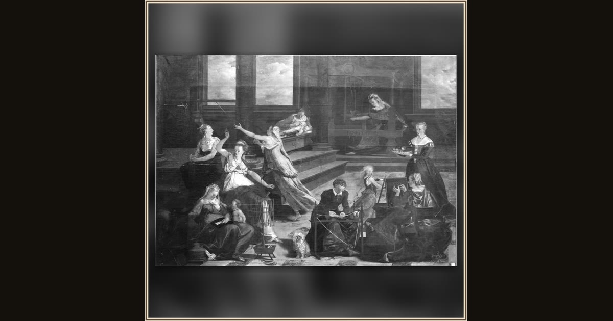

Penelope
Abraham del Hele · 1563 · Alte Pinakothek · Munich, Germany
Across a canvas as wide as a room, Abraham del Hele tells Penelope's whole story — the loom, the pushy suitors, and the long faithful wait. Explore its place in Book II of the Odyssey.